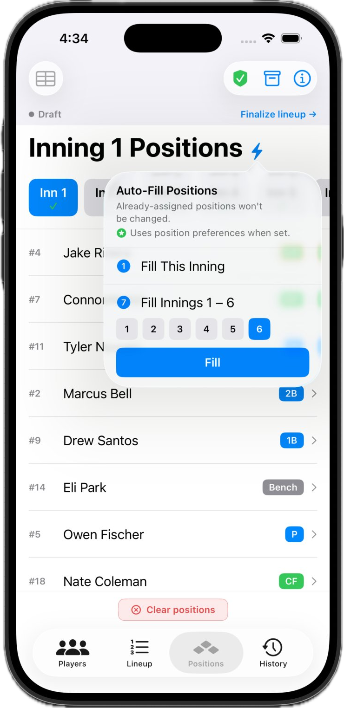
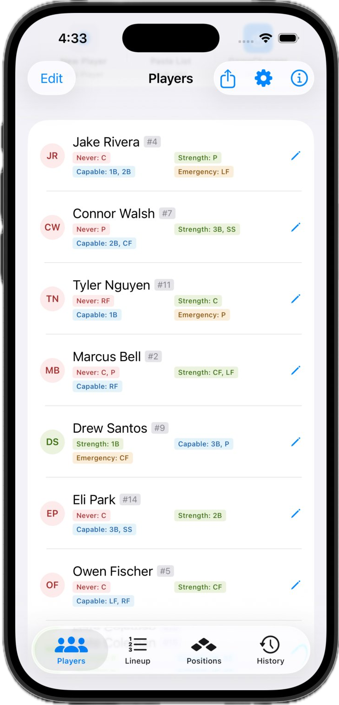
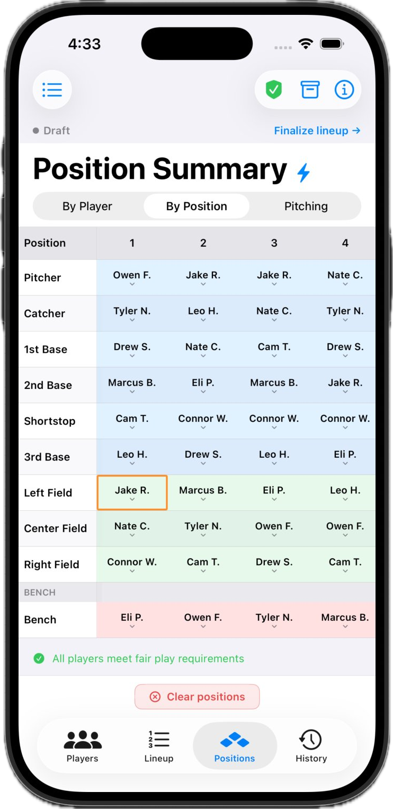

Build your next lineup tonight
Download Stack the Lineup and have a fair, finished lineup before your next game.
Download on theApp StoreBuild your batting order, auto-fill defensive positions, and keep playing time fair — all before you reach the field. No spreadsheets. No ads.

Built for the leagues you coach in
Stack the Lineup handles the math of fair play so you can focus on coaching. Plan it at the kitchen table, bring the PDF to the dugout.
Tap the bolt and the app fills every open defensive spot while checking each fair-play rule. Fill a single inning or innings 1 through 6 at once.
Tag every player by position: their strengths, where they're capable, an emergency-only spot, and positions they should never play. Auto-Fill follows your call.

The position summary shows every inning and every spot in one grid. Fair-play warnings flag missing infield innings, back-to-back bench, and overuse before the first pitch.

Export a clean batting order and defensive grid to print or share. Bring it to the dugout, no phone required.
Archive each game when it ends. Track innings played, bench time, and position spread across the whole season.
Tap Edit, then drag any player up or down. Your batting order carries over week to week so you start ahead.
Already have your roster in GameChanger? Import it in seconds instead of typing every name and number.
Coaching more than one team? Switch between rosters and keep each season organized on its own.
A native iOS app that does one thing well. No accounts to create, no ads between innings, no data to hand over.
One-time purchase. No subscription, ever. Pay once and own Pro for good.
A fully working single-team lineup builder.
Unlock the full coaching toolkit.
One-time purchase. No subscription.
Real feedback from coaches who used to build lineups in a spreadsheet.
"I used to spend an hour the night before every game in a spreadsheet. Now it's five minutes and I go into the game with confidence."
"The fair-play warnings are the whole thing for me. It catches when I miss putting a kid in the infield when I'm dead tired just trying to put together a lineup. Worth way more than five bucks."
"Imported my roster from GameChanger, set everyone's positions once, and now Auto-Fill does the heavy lifting. The PDF I bring to the field looks great."
Download Stack the Lineup and have a fair, finished lineup before your next game.
Download on theApp Store